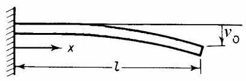
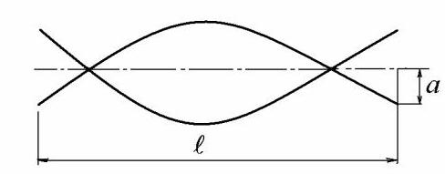
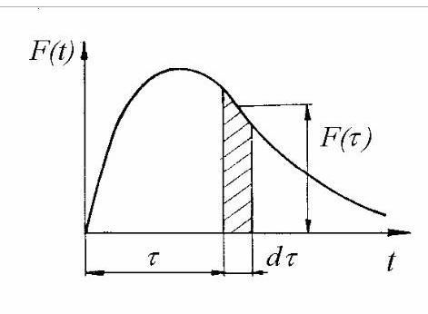
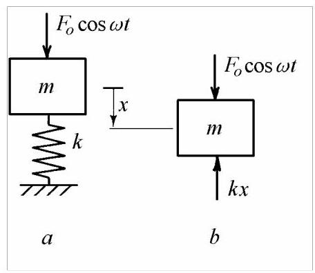

第3篇
例2.2¶
求图2.6所示均匀悬臂梁的基频。
解:考虑如下形式的挠度曲线
可以看出，该函数满足边界条件\(x = 0\)、\(v = 0,\mathrm{\;d}v/\mathrm{d}x = 0\)和\(x = \ell ,\;{\mathrm{d}}^{2}v/\mathrm{d}{x}^{2} = 0\)，但不满足条件\(x = \ell\)、\({\mathrm{d}}^{3}v/\mathrm{d}{x}^{3} = 0\)(零剪力)，因此它是一个近似可容许函数。

图2.6
最大势能为\({U}_{\max } = \frac{{\pi }^{4}}{64}\frac{EI}{{\ell }^{3}}{v}_{0}^{2}\)。最大动能为\({T}_{\max } = {\rho A}{\omega }_{1}^{2}{v}_{0}^{2}\ell \left( {\frac{3}{4} - \frac{2}{\pi }}\right)\)，或\({T}_{\max } = \frac{\rho A}{2}{\omega }_{1}^{2}{v}_{0}^{2}\ell \cdot {0.23}\)。
令两种能量相等，得到振动基频(单位:rad/s)为
真实解(6.16)为\({\omega }_{1} = \frac{3.515}{{\ell }^{2}}\sqrt{\frac{EI}{\rho A}}\)，因此基于瑞利(Rayleigh)解的值高出4%。
若假设的函数为无质量悬臂梁在端部集中载荷作用下的静挠度曲线
最大势能为\({U}_{\max } = \frac{3}{2}\frac{EI}{{\ell }^{3}}{v}_{0}^{2} = \frac{1}{2}k{v}_{0}^{2}\)，最大动能为\({T}_{\max } = \frac{1}{2}\left( \frac{{33\rho A}\ell }{140}\right) {\omega }_{1}^{2}{v}_{0}^{2} = \frac{1}{2}{m}_{\text{red }}{\left( {\omega }_{1}{v}_{0}\right) }^{2}\)。
令两种能量相等，由瑞利公式给出的基频为
该值仅比真实解(6.16)高1.47%。
上式表明，对于所假设的挠度曲线，具有均布质量的梁与在端部附加集中质量\(\left( {{33}/{140}}\right) {\rho A}\ell\)的无质量梁具有相同的固有频率。这称为等效质量(reduced mass)。
例2.3¶
求图2.7所示自由-自由均质梁的基本固有频率。

图2.7
解:可假设挠曲形状为如下形式
常数\(a\)需根据自由-自由梁的动量守恒确定
由此得到\(a = 2{v}_{0}/\pi\)。
采用如下形式的挠曲形状
由式(2.19)可得基本固有频率
精确解(6.21)为\({\omega }_{1} = \frac{22.4}{{\ell }^{2}}\sqrt{\frac{EI}{\rho A}}\)，故误差仅为0.9%。
2.2 无阻尼受迫振动¶
无阻尼受迫振动由随时间变化的力或强制位移引起。若质量受到幅值恒定、频率可变的简谐力作用，当激励频率接近系统固有频率时，响应将无限增大，此现象称为共振(resonance)，表现为剧烈振动。对无阻尼系统，共振频率等于系统固有频率，通常应避免在共振状态下运行。对有阻尼系统，共振时的响应幅值有限。
在恰当间隔推秋千会出现共振振荡。土壤夯实机、混凝土振捣器、振动输送机、路面钻机及振动筛等设备常利用共振振动。然而，共振的主要问题在于其不利影响:在共振状态下运行会产生过大的运动和应力幅值，导致结构疲劳与失效、对人体产生危害或不适，并降低产品精度。某个噪声部件在共振时发出的恼人振动甚至可能阻碍汽车或家用电器的销售。
当简谐力施加于弹簧时，在系统固有频率处，驱动点位移降为零，此现象称为反共振(antiresonance)。通常，这是一种局部特性，取决于激励位置，可用于获得振动幅值极低的点。
2.2.1 质量受任意力激励¶
考虑一个随时间任意变化的力\(F\left( t\right)\)(图2.8)。
在极短时间间隔\(\mathrm{d}\tau\)内，力\(F\left( \tau \right)\)可视为常数。阴影面积表示一无穷小冲量\(F\left( \tau \right) \mathrm{d}\tau\)，其引起速度变化
质量\(m\)在整个响应历程\(t > \tau\)内对微分冲量的响应为
该式可由(2.6)推出，并考虑在\(t = \tau ,{x}_{0} = 0\)和\({v}_{0} = \mathrm{d}\dot{x}\)时的情况。
整个加载历程可视为一系列此类无穷小冲量的叠加，每个冲量均产生形如(2.20)的微分响应。

图2.8
对于线性系统，总响应可通过累加加载历程中产生的所有微分响应获得，即对式(2.20)积分如下
式(2.21)通常称为无阻尼系统的杜哈梅积分(Duhamel integral)。
2.2.2 质量在谐波力作用下的激励¶
图2.9所示的质量-弹簧系统\(a\)受到作用于质量的谐波力\(f\left( t\right) = {F}_{0}\cos {\omega t}\)的激励，其幅值\({F}_{0}\)恒定，驱动频率为\(\omega\)。
根据图2.9\(b\)的自由体图，其运动由牛顿第二定律描述
可写为
线性非齐次方程(2.22)的通解为零右端项方程的齐次解(2.3)与特解之和。特解可通过假设其形式与激励函数相同求得
其中\(X\)为稳态条件下受迫响应的幅值。

图2.9
将特解(2.23)代入后，方程(2.22)变为
可全式除以\(\cos {\omega t}\)得到
或
在(2.24)中
是弹簧在恒定载荷\({F}_{0}\)作用下的静态挠度，\({\omega }_{n} = \sqrt{k/m}\)为无阻尼固有圆频率(2.4)。
在\(\omega \neq {\omega }_{n}\)的条件下，方程(2.22)的通解为
由于是两个不同频率谐波的叠加，解(2.26)并非简谐运动。
设初始位移和速度分别由常数\({x}_{0}\)和\({v}_{0}\)给出，则由方程(2.26)可得
于是总响应为
对于零初始条件，\({x}_{0} = {v}_{0} = 0\)，响应(2.27)变为